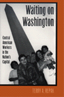

<body bgcolor="#FFFFFF" text="#000000" link="#0000FF" vlink="#CC0000" alink="#CC0000"><center><hr width="350" size="1" align="center" noshade>A comprehensive study highlighting gender differences in the forces that propel international migrations<hr width="350" size="1" align="center" noshade><p><a href="https://cdcshoppingcart.uchicago.edu/Cart/ChicagoBook.aspx?ISBN=9781566393010&&PRESS=temple" target="_top">Buy this book!</a> | <a href="https://cdcshoppingcart.uchicago.edu/Cart/Cart.aspx?PRESS=temple" target="_top">View Cart</a> | <a href="https://cdcshoppingcart.uchicago.edu/Cart/Cart.aspx?PRESS=temple" target="_top">Check Out</a></p><p></p></center><!--none//--><h1>Waiting on Washington</h1>
<H2>Central American Workers in the Nation's Capital</H2>
<h3>Terry A. Repak</h3>
<P>cloth 1-56639-301-9 $83.50, Jun 95, <FONT COLOR=#990033>Out of Stock Unavailable</FONT>
<br>paper 1-56639-302-7 $30.95, Jun 95, <FONT COLOR=#990033>Available</FONT>
<br>Electronic Book 1-43990-385-9 $30.95 <FONT COLOR=#990033>Out of Stock Unavailable</FONT>
<BR> 272 pp
5.5x8.25
20&nbsp;tables 2&nbsp;map(s) 19&nbsp;halftones
</P><BLOCKQUOTE><I>"Waiting on Washington provides not only a historical documentary of an important era in Washington's history, but proves to be an insightful guide into the nature of immigration to the United States."</I>
<br>&#151<b><I>Washington History</I></b><I></I></BLOCKQUOTE>
<p>In an analysis of recent immigration patterns in Washington, D.C., Terry A. Repak documents the unusual predominance of women among Central American immigrants. Two thirds of the arriving immigrants in earlier decades have been women, many of them recruited by international diplomats and U.S. government employees to work as housekeepers and nannies. Repak considers the labor force participation patterns for women compared to men, the effect of immigration laws&#151particularly the IRCA's uneven impact on women versus men&#151and the profound adjustments in gender roles and identities that accompany migration.
<p>Showing an extraordinary amount of autonomy, most of these immigrant women decided to migrate without consulting either fathers or partners, and they gained even greater independence once settled. Repak plots the career trajectories of numerous Central American immigrant women and men to illustrate the array of the women's responses, gender differences in the migration and assimilation experience, the availability of work, and the possibility for upward mobility and higher wages. Providing social, economic and political context, she looks at the conditions that set the stage for this migration, including the rapid expansion of service jobs in the 1960s and 1970s in Washington, D. C. and the political strife in such Central American countries as war-torn El Salvador, Nicaragua, and Guatemala.
<BR>&nbsp;<h2>Reviews</h2>
<p><I>"Dr. Repak's study is competent, clearly written and sensitive to theoretical and policy-related questions in the field of migration research. Her book will be of interest to students of gender for its special attention to the role of women in migration. I believe it will be come a standard reference for a large interdisciplinary group of scholars whose interest range from migration to economic restructuring to gender and development."</I>
<br>&#151<b>M. Patricia Fernandez Kelly</b>, The Johns Hopkins University
<p><I>"Terry Repak makes an important contribution to the immigration policy literature by exploreing a new dimension of the causes and effects of migration flows. She...extends traditional migration models by differentiating male and female migrants. The resulting analysis is a novel look at the factors that motivate people to move across borders, as well as the ways in which those people impact their new societies."</I>
<br>&#151<b>Demetrios Papademetriou</b>, Director, International Migration Program, Carnegie Endowment for International Peace
<BR>&nbsp;<h2>Contents</h2><P>
<p>List of Tables and Maps
<br>Acknowledgments
<br>1. Introduction
<br>2. Portrait of a Central American Sending Country
<br>3. Portrait of a U.S. Receiving City
<br>4. Labor Recruitment in the Nation's Capital
<br>5. Working Women and Men in Washington's Labor Market
<br>6. Manipulating New Immigration Laws
<br>7. New Roles in a New Landscape
<br>8. Conclusion
<br>Appendix: Methodology
<br>Notes
<br>Bibliography
<br>Index
</P><BR>&nbsp;<H2>About the Author(s)</H2>
<P><b>Terry A. Repak</b> holds a Ph.D. in Liberal Arts from Emory University and is a freelance writer whose publications include <I>Edward Kennedy: The Myth of Leadership</I> (with Murray B. Levin).</P>
<BR><H2>Subject Categories</H2>
<p><A HREF="/tempress/gender.html" TARGET="_top">Gender Studies</a>
<BR><A HREF="/tempress/labor.html" TARGET="_top">Labor Studies and Work</a>
<BR><A HREF="/tempress/immigration.html" TARGET="_top">Immigration Studies</a>
</p>
<p align="center"><a href="https://cdcshoppingcart.uchicago.edu/Cart/ChicagoBook.aspx?ISBN=9781566393010&&PRESS=temple" target="_top">Buy this book!</a> | <a href="https://cdcshoppingcart.uchicago.edu/Cart/Cart.aspx?PRESS=temple" target="_top">View Cart</a> | <a href="https://cdcshoppingcart.uchicago.edu/Cart/Cart.aspx?PRESS=temple" target="_top">Check Out</a></p><p><font face="Arial" size="1"><a href="copyright.html" onMouseOver="window.status='Web Copyright Policy';return true;" onMouseOut="window.status=''" title="Web Copyright Policy">&copy;</a> 2015 <a href="http://www.temple.edu" target="new" onMouseOver="window.status='Link to Temple University home page';return true;" onMouseOut="window.status=''" title="Link to Temple University home page">Temple University</a>. All Rights Reserved. http://www.temple.edu/tempress/titles/986_reg.html</font></p>